SETEDIT |
 |
How to use tags
The editor's help have a good description about it, but this page contains an
ilustrated tutorial.
This tutorial is a simplification of the process and I suggest reading the
documentation to learn more. So use this tutorial as a quick start-up to get
see how it works and once you start loving it read more in the docs.
Note: this tutorial can be used to learn other features of the editor. For
this reason the explanations are very detailed. I'm sorry if you find it too
detailed. On the other hand, if you find it confusing please report it
explaining the problems.
What are tags?
TAGS files are plain text files containing a list of symbols from your source
code. For each symbol the file indicates in which file it's located and how to
find the symbol inside the file. Modern programs also include very important
information like which type of symbol is defined and if this symbol is part of
a bigger construct like a class.
This information is very useful to do searches. The editor implements
facilities to jump to any defined symbol, browse classes and do word
completion using information from tag files.
What can I do with tags?
With the tag files you can:
- Jump to any defined symbol.
- Browse class hierarchy (tested only for C++ but other languages are
supported).
- Ask the editor to complete a partially typed symbol.
Which languages are supported?
All the languages supported by the tags tool. For
Exuberant CTags that's 33
languages.
Using it step by step
This is a really simplified way to use ctags with SETEdit. As with all
simplified things you lose some control in favor of simplicity. For this
reason I encourage reading the docs after you get it working and determine
that's good for you. Note that tags generation could be too slow using the
methode I describe here and if you are using a slow system and coding a big
project you'll most probably need to learn more to improve the performance.
Step 1: Get the ctags program
You'll need the Exuberant CTAGS program. May be other programs are ok but
this is the only one I tested and it's free software.
The home page of the project is:
http://ctags.sourceforge.net/.
Linux distributions, like Debian GNU/Linux, includes it and the best is to
just install the corresponding package.
Step 2: Create a project for your program
- Change the working directory to the place where you have the files.
(i.e. $ cd /usr/src/my_project).
- Start the editor. (i.e. $ e).
- Select the "Project | Open" menu option. Figure 1.
- Give a name to your project. (i.e. my_project). The editor will create
a .epr file for it. Figure 2.
- Add the files to your project. You can do it using the insert key or by
selecting "Project | Import project items" and providing a text file
containing the names of the files to import.
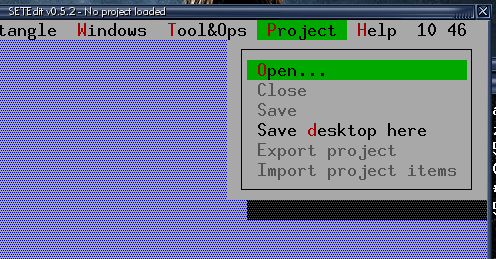
Figure 1: The "Project | Open" menu option.
|

Figure 2: Giving a name to the project.
|
The ilustrations shows how to create a project called my_project
containing a trivial C file called my_file.cc.
If you want to copy & paste the example file from your browser here I
provide a link to the file exported with the editor as HTML:
my_file.cc.
Note 1: Isn't beautiful how the export works? ;-)
Note 2: The snapshots are from a machine using Linux, pay attention to the
different font sizes. In other snapshots you'll see different fonts.
|
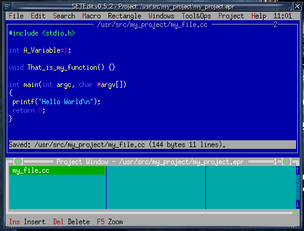
Figure 3: An example of a really trivial project.
|
|
|
Step 3: Generate the tags using the easy way
- Select the "Search | Jump to symbol" menu option. This option have a
default short-cut defined as Ctrl+F2, it can be changed editing the
menubind.smn file. Figure 4.
- As you don't have a tags file in the working directory the editor will
offer some advice. The dialog says "This option needs a tags file. Do you want
to read more about it?". Answer No this time. Figure 5.
- Now the editor knows you are lazy and hence an information dialog will
appear saying: "I can try to generate a tag file, go ahead?". Answer
Yes, in this way the editor will invoke ctags to generate a tags file
using some rasonable defaults. Figure 6.
- Finally you'll get the list of symbols defined in your project. You can
incrementally search any symbol and pressing ENTER you'll jump to its
definition. For most cases the information you see is not all and you have
to scroll horizontally to read all. You can also use F5 to zoom the dialog.
Figure 7.
Note: The editor takes the word under the cursor to do a search in the list
of symbols. For this reason you can place the cursor over a function call and
then press Ctrl+F2, if the search matched you can just press ENTER and jump
to the function definition.
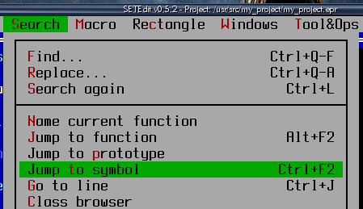
Figure 4: The "Search | Jump to symbol" menu option.
|
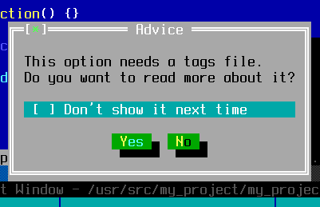
Figure 5: The advice suggesting to read the docs.
|
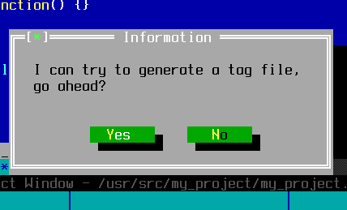
Figure 6: The dialog asking if you want to create a tags file.
|
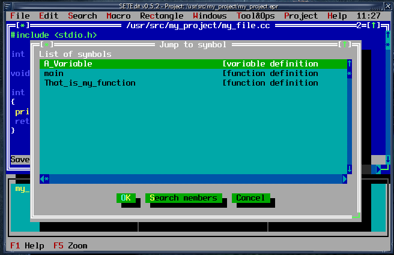
Figure 7: Symbols from the trivial example.
|
Step 4: Configuring the editor to update the tags file
- Select the "Tool&Ops | Options | Tag Files | Options" menu option. This
option will show a small dialog. Figure 8.
- Select the "Using central file" option and press the OK button. Figure
9 (it shows the default option).
Once you enable it the editor will check the modification date of the files
you are editing and will update the tags file if you request any operation
passing the list of modified files to ctags tool.
IMPORTANT! If for some reason the data in the tags file becomes
inconsistent you can ask the editor to regenerate the tags file just deleting
the file called tags from the working directory.

Figure 8: The menu entry for tag options.
|

Figure 9: The dialog for the options.
|
Step 5: Word completion
The information from the tags file can be used to ask the editor to complete
a partially typed symbol. To ilustrate it a suggest adding another function
to example called That_is_not_my_function. Here is the suggested
source code: my_file.cc.
Now go to any place and type That, then choose the "Search | Word
completion" menu option (or Ctrl+Tab). You'll get a list showing the
available options to complete the name of the function. You can move the
cursor or incrementally search until you reach the desired option. To confirm
the selection press ENTER or type any symbol. In this case you can confirm
typing the parenthesis. The figure 10 shows the mentioned example.

Figure 10: The word completion in action.
Step 6: Browsing classes
For this example we'll need a more complex source code, here is the proposed
source code: my_file.cc.
- Select the "Search | Class browser" menu option. Note: it also looks
for the word under cursor so you can use it when the cursor is over a class
name.
- The editor will show a list of classes. Figure 11.
- Select the "Class_Child" class.
- You'll get a dialog showing the parents and children for this class (in
this case it have only a parent and no children). Figure 12.
- From this dialog you can jump to related classes. In this example you
can jump to "Class_Parent" selecting it and using the "Browse parent" button.
But let this for another moment.
- Pressing the three first buttons you can get different information
about the class. Suppose you are looking for information about the data member
called "data_member_1" and you don't even know to which class belongs. Press
the "This & parents" button. You'll get a list of members sorted by hierarchy
(figure 13) and if you press the "Sorted" button you'll get it alphabetically
sorted (figure 14).
- Select the "data_member_1" and then press the "View class" button.
You'll get a dialog quite similar to the figure 12 but with information for
the "Class_Parent" class.
- Now press the "This class" button. You'll get a list of the members for
this class. Figure 15. Note: I resized the dialog to show it better in
the picture.
- Select the "data_member_1" and press the "Jump" button (or just ENTER).
The editor will show the line where this data member is defined.
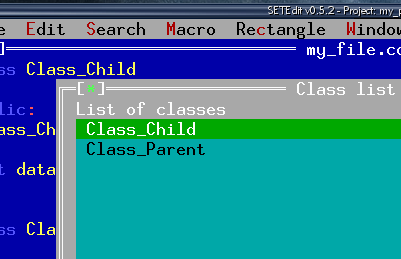
Figure 11: The list of classes available for browsing.
|
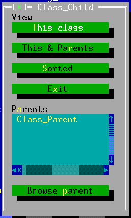
Figure 12: The dialog showing Class_Child inheritance information.
|
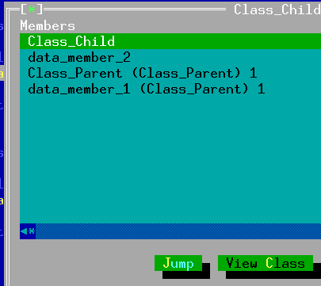
Figure 13: The list of members for this class and its parents.
|
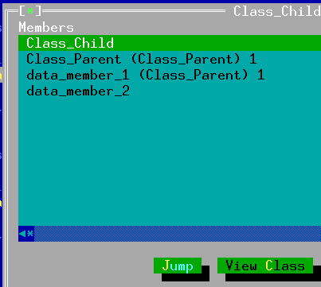
Figure 14: The same list but alphabetically sorted.
|
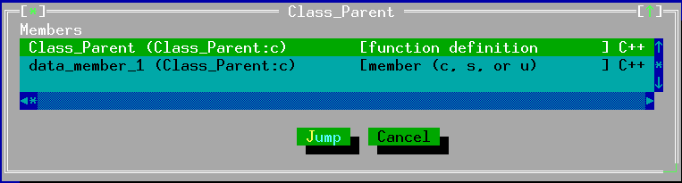
Figure 15: List of members for this class.
|
I think that's enough to show you how powerful are tags. Play a little bit
with it, if you have a big project you'll soon discover how useful are tags.
Then read the documentation of the editor and ctags to learn how to
customize it and how to use more than one tags file.
Good luck!